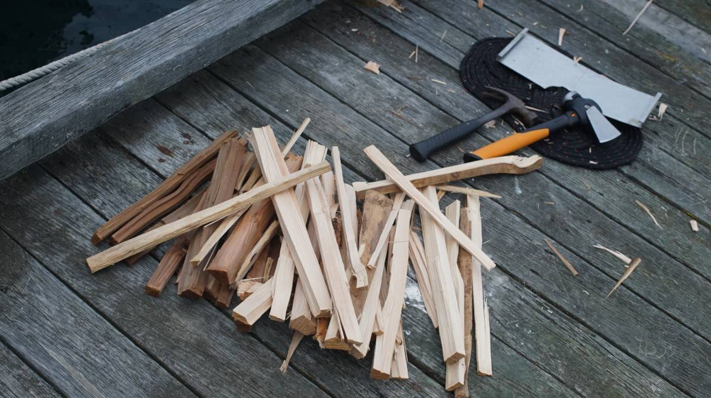

port mcneill
On May 16th 2024, We had a rough, short transit to Port McNeill(B.C, Canada) from Telegraph Cove. The wind was blowing 20-25 knots that day, coming out of where? Out of where we need to go always, of course! Such is the nature of sailing in this region.
We've sailed in that kind of weather often when offshore, but the dangers are many near land. We had to dodge islands, shoals, rocks, boat traffic, ferries, and contend with ever-increasing waves and wind. The current was with us, but wind opposing current makes for even larger, and steeper waves. In fact, each knot of current opposing the wind creates waves normally associated with 10 additional knots of wind. By the end the sea was covered with whitecaps. With 2 reefs in, Pino handled it fine, but maneuvering with so many dangers around you is very scary.
We sailed from the mouth of one harbor to the other, at least this much wind permitted that. No one else was sailing that day, we were the only fools out there. The wind really funnels between Malcom Island and Vancouver Island. To try and get more sailing space we tried to go north of Cormorant Island, south of Alert Bay the seas narrow, but that turned out to be a mistake... somehow the wind up there was worse. Tacking in heavy seas and weather is not our favorite.
Once behind the ledge to the north of Port McNeill, we got to work trying to douse the sails in this terrible, terrible weather. Furling the jib is really difficult in high winds, even when facing into it, so sometimes we roll it in wrong. Rolling it wrong means that the wind can catch in it. The result is the top part of the sail fills with air and balloons out while the bottom is still furled. Opening the headsail now by pulling on the jib sheets doesn't work, the furled part of the sail is rolled tight against the headstay, the balloon creates a sort of lock. The wind causes the pocket of air in the sail to flail violently which shakes the entire rig in a very scary way. This has happened to us before, and it happened just a few feet away from the Municipal docks. Wonderful. Rek was inside on the radio confirming our slip and had to rush outside to help with the maneuvers. The only way we found to fix this is to do a 360 degree turn.
We had to do this twice. After the first turn we could open the sail again to furl in, but then it furled wrong again... so we had to do another turn. Then the jib got rolled in well, it's a very harrowing thing to do when you're just off a marina dock. To make matters worse, there were fishermen coming in and out of the harbor all the while, Port McNeill is also a working harbor. Thankfully, the reefed main gave us no such trouble.
Unfortunately, the only spot available in Port McNeill was only partially shielded from the wind waves, so we got our asses kicked all night at the dock too. North Island marina was full up, we didn't expect that, and the Municipal docks only had the wave-pool side of G dock available, which sticks out far, beyond the protection of the breakwater. The harbourmaster felt sorry for us, he assigned our poor weather-battered boat another spot. We couldn't move to it until the next day though, the wind and water was keeping us pinned to the dock. The fenders held the boat off the dock, while the stern line, with a snubber, absorbed the rest of the shock. We considered anchoring out, but by then we were exhausted and the boat being tethered to a doing, even a terrible one, seemed like a fantastic idea.
After a white-knuckle ride everything feels hazy, even when in a safe port our minds stays back there for hours and hours. We've been in worse weather than this offshore, but it's different when you don't have room to maneuver. We couldn't ease off ever. Sailing near land is much more dangerous, we can't heave to in these waters.
We went to do errands in town to try and forget this weather. We went to get some fresh food at the IGA, a short walk away, and went to visit Shoprite to try and buy a hatchet and some firewood for our woodstove. We've been running it often these days, the mornings and evenings are very cold, even more so when it is raining, we need to replenish our wood stores.
We moved the next morning to a more sheltered location. There, we tried our new hatchet and went to work splitting the logs. Our firebox can only accomodate short lenghts of wood, so after splitting the logs we usually have to cut them down again with a hacksaw. The hatchet we got is small, but has a lot of weight to it, which matters when splitting wood.
While in port, we went to see the biggest burl in the world, a local attraction. For those who don't know, a burl is a very large knot, or growth, in a tree. "Discovered in 2005, the Ronning Burl from Holberg on northern Vancouver Island is estimated to weigh nearly 30 tonnes (33 US tons). The burl was cut from a 525-year-old spruce and measured 6 m wide and 6 m tall (19 ft 8 in x 19 ft 8 in), with a circumference of around 13.7 m (45 ft)[Source].

Unfortunately, the burl was set aflame last year by some teenagers. Now the pride of Port McNeill is half-charred. When we saw it, it was sitting in gravel, with tape marking the area around it to keep people away in case it decided to roll. We're not sure what plans they have for it, it is certainly less majestic than it used to be, but it is still impressive.
Port McNeill is a good place to wait out weather to go north to Port Hardy or to cross Queen Charlotte Sound to the mainland side. Moorage at the Municipal marina is reasonable (1.33$/foot), there's water, power(we didn't plug in) and everything on land is close by. It's possible to anchor past the marina, although this is more common during the busy season. Other sailors have reported excellent holding in mud.
Anchorage. Shelter from north and west winds can be obtained 0.4 mile NE of Deer Bluff in 10 to 16 m. Anchorage can also be obtained farther east, south of Neill Ledge, in 16 to 38 m but there is less shelter from north winds. (Sourced from Sailing Directions).
Fuel. Fuel(diesel and gas) is available at the North Island Marina fuel dock. If moored at North Island marina, they can fuel your boat at your slip via long hoses. Because we only had 2 jerry cans to fill, we called the marina and asked if we could walk onto the fuel dock from the locked marina gate. The marina attendant gave us a code so we could walk on (we brought a cart from the Municipal marina to carry them back to Pino).
We are now waiting for a weather window to cross Queen Charlotte Strait, we are considering 5 ports: Blunden Harbor, Allison Harbor, the Walker Group, Miles Inlet and Millbrook Cove. Blunden is the closest, Walker Group has limited anchoring but is well-positioned to round Cape Caution, Allison and Miles inlet are nearest to Slingby and Cape Caution, and finally Millbrook Cove is after Cape Caution and is the furthest but also the best case scenario.
Below is a photo of Pino, sailing in Queen Charlotte Strait, shortly after leaving Port McNeill. It was taken by our good friends Caroline and Viktor on SY Moonshine. We had left at 0430 that morning, they followed shortly after, and snapped this beautiful shot as they passed us(they're faster than us).